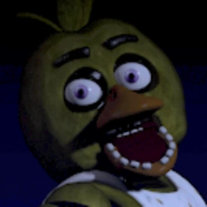

- Chica is a bright yellow animatronic chicken with a spherically-shaped head, orange beak, magenta eyes, and black eyebrows.
- She wears a white bib that reads "LET'S EAT!!!" in yellow bubble letters, outlined in purple, with tricolored triangle patterns.
- Chica carries a plate with an anthropomorphic pink cupcake and has three "tufts" of feathers on the top of her head.
- She has blocky teeth on her lower beak and visible endoskeleton teeth in the back of her mouth.
Appearence:
- Chica is the back-up singer for the band
- Chica is portrayed as pushy, gluttonous, and lovable in the Freddy Fazbear's Pizza Theme Song.
- She has a strong love for food, particularly pizza, and can be distracted by her gluttony.
- Chica is determined and will stay at the night guard's door for extended periods of time.
- Chica exhibits advanced technology and has a beak that can pop open at the push of buttons.
personality & Functionality:
Five nights at Freddy's 1
- Chica approaches players from the right side and is often found in the kitchen.
- She can be distracted by eating pizza, which delays her from reaching the player.
- Chica exhibits persistence and stays at the night guard's door for longer periods compared to other animatronics.
In Five Nights at Freddy's: Help Wanted:
- Chica has advanced technology similar to the Funtime animatronics, with a pop-open beak mechanism.
In Five Nights at Freddy's AR: Special Delivery:
- Chica becomes an active threat in the player's real-world environment through augmented reality.
- Using GPS and augmented reality technology, Chica will stalk and hunt the player, appearing unexpectedly.
- Players must defend themselves against Chica's scare and attack by utilizing various tools and tactics.
-
In Ultimate Custom Night:
- Chica is one of the selectable animatronics in the game, allowing players to customize her behavior and difficulty.
- Players must strategically manage Chica's movements, monitor her position using cameras, and use various tools to survive the night and defend against her attacks.
- Chica's unique behaviors and challenges contribute to the complexity and variety of gameplay in Ultimate Custom Night.
In-game Behaviors:
Chica's presence adds to the intense and immersive experience of the games, requiring players to stay vigilant and employ effective strategies to avoid her attacks and survive the encounters.